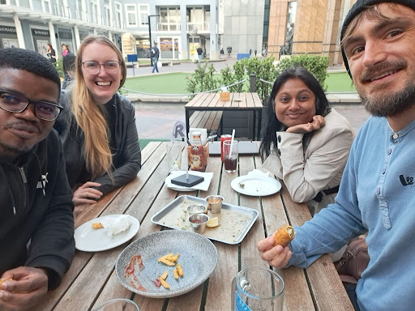
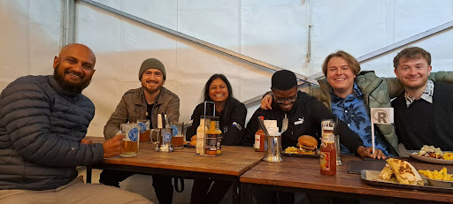

Jared Norman and Retselisitsoe Monyake, organizers of the Cape Town R User Group, recently spoke with the R Consortium about strengthening South Africa’s R community and advancing infectious disease modeling at the Modeling and Simulation Hub Africa (MASHA), which is part of the Department of Statistics at the University of Cape Town (UCT). Alongside efforts to organize local meetups and collaborate with Johannesburg, they shared their work on DTPBoost—an R-based tool developed in collaboration with the CDC and AFENET to help countries evaluate and optimize DTP booster vaccination strategies. In this interview, they discuss how community building, Shiny development, and applied epidemiological modeling come together to strengthen R’s impact in global health.

Please share about your background and involvement with the RUGS group.
Jared: My name is Jared Norman, and I am a research officer at the Modeling and Simulation Hub Africa (MASHA), which is part of the Department of Statistics at the University of Cape Town (UCT). Our research focuses on infectious disease modeling, often with a policy emphasis. We address questions related to infectious disease interventions and also examine vaccine-preventable diseases, which we’ll discuss further.
In terms of my background, I initially studied computer science and mathematics at university. During that time, I worked for a non-profit organization, Numeric, focused on math education, leveraging the approach of Khan Academy. I primarily used Python to develop a Django-based website, and I expected to work with Python in the industry after graduation.
However, I first entered the cybersecurity field, where I ended up using C#. Eventually, I transitioned to my current role in infectious disease modeling, where I anticipated using Python again. Instead, I was assigned to work with R. It took me a while to perceive R as a programming language rather than just a tool for statisticians. However, after reading ”Advanced R” by Hadley Wickham, a realization clicked for me. I began to appreciate R as a true programming language aligned with my computer science background.
I have worked on several R packages, particularly in the malaria research space. In this area, reports often include data as Excel files in the appendices. However, there can be a barrier for individuals who are not very familiar with the structure of the reports, making it challenging for them to pull in the data. To address this, I developed an R package that provides a more transparent way to access this data within R. This package not only makes the data available but also promotes responsible use. I ensured that footnotes present in some columns or cells were maintained as character strings. This way, users are prompted to consider the context of the data rather than simply using the numbers without examination.
Additionally, I have started a few other projects but have yet to find the time or grant funding to complete them. Each year, I also supervise undergraduate students in the statistics department, encouraging them to contribute their project outcomes back to the community. For instance, this year, some students focused on serological models, which involve examining antibodies in the blood to estimate how many people have contracted a disease. They worked on this project and successfully created an R package, which I’m proud to say they submitted to Journal of Open Source Software (JOSS).
Overall, I advocate for the integration of software development into the academic realm.
Retselisitsoe: I also work at the modeling and simulation hub with Jared, and we are based at UCT. I actually came across R during my studies at university while I was doing statistics, and to be honest, I didn’t really like it at that time. I was learning Python and Java in my Computer Science class. After I finished my studies, I was primarily using Python for work, focusing on building interactive applications with Dash.
During the COVID-19 pandemic, many people started creating various dashboards related to the virus. I noticed that the dashboards I liked the most were built using Shiny, so I started looking into it. At first, I wasn’t completely sold on it, but I was also tutoring someone who needed help with R at the time. They were using the Tidyverse, which I wasn’t familiar with, so I read “R for Data Science,” which introduced me to Tidyverse. I absolutely loved it!
After learning about the Tidyverse, I began to use it extensively. During the pandemic, I also started creating dashboards using Shiny. In late 2020, I received a freelance project to build a Shiny application, which further solidified my interest. In my next job, I continued to use R, and that’s how my journey with it evolved.
In terms of networking, I engage with a lot of people in the R community, including those who have transitioned from other fields. I’m active on platforms like Mastodon and Bluesky. However, I’ve noticed that the people I used to follow on Twitter don’t post as much anymore. I’m also part of the Data Science Learning Club on Slack, which hosts book clubs. I’ve participated in a few; completed two, and I am currently involved in an ongoing book club for “Advanced R” as well as another one focused on DevOps for Data Science, which includes both R and Python content.
Additionally, we have PhD students at our hub to whom we give workshops. I’ve conducted some R workshops, including one in Kigali, Rwanda, where I taught participants how to use Shiny, and I believe it went quite well.

Please share about a project you are currently working on or have worked on in the past using the R language. Goal/reason, result, anything interesting, especially related to the industry you work in?
One of the projects we are particularly proud of at MASHA is the development of the DTPBoost Vaccination Strategy Tool. The DTP vaccine, which stands for Diphtheria, Tetanus, and Pertussis. This vaccine protects against these three diseases and is typically administered as part of a primary series starting within the first few weeks after birth.
However, there are ongoing questions regarding when and if to administer booster doses of this vaccine in different countries. This project began in collaboration with the WHO and the CDC before the onset of COVID-19. Initially, we had discussions about pursuing this work, but when COVID-19 emerged, funding was redirected, and our efforts were put on hold. Nevertheless, we were eventually able to resume and complete the project.
We have developed three disease models that are fully age-specific, tracking the administration of vaccine doses over the weeks following birth. These models are interconnected through the single vaccine and its various doses, making them quite complex to solve—there are approximately 10,000 equations that must be processed using a numerical integrator, including non-linear equations. Ensuring transparency for the modelers throughout this process is a significant challenge. Additionally, we have focused on effective communication and decision support throughout the project.
We developed an application built on our modeling framework, which is a Shiny application that enables users to input detailed information about their country’s context. If you represent a Department of Health and have specific data that is confidential, you can input that data into the application. This allows the model to use your particular information instead of relying on a global average or less relevant data.
Typically, this application is not used in isolation; rather, it is used in collaboration with a modeler. This collaboration is crucial, as it provides valuable involvement and feedback from stakeholders throughout the modeling process.
In summary, DTP serves as the underlying model, while DTP Boost is the application built on top of it. We have been working on this project for several years and are pleased to announce that we have finally published it and secured a DOI. We are also in the process of preparing publications. Many people contributed to this project, and we take great pride in our accomplishment.
What resources/techniques do/did you use? (Posit (RStudio), Github, Tidyverse, etc.)
In the DTP project, much of the code was custom. We used the deSolve package for numerical integration. I utilized the tidyverse extensively, along with several of its packages for various tasks, as well as the promises package. We have three independent models running concurrently within a Shiny app, and using promises is beneficial for parallelizing that workflow.
In terms of packages, there’s the entire tidyverse, along with Shiny and Shiny Dashboard. If we were to redo this project, we would definitely incorporate the bslib package as well. Additionally, we used ShinyJS for client-side interactions, which is part of the usual Shiny package toolkit.
How do I Build an R User Group?
R Consortium’s R User Group and Small Conference Support Program (RUGS) provides grants to help R groups organize, share information, and support each other worldwide. We have given grants over the past four years, encompassing over 82,000 members in almost 100 user groups in 41 countries. We would like to include you! Cash grants and meetup.com accounts are awarded based on the intended use of the funds and the amount of money available to distribute
https://r-consortium.org/all-projects/rugsprogram.html